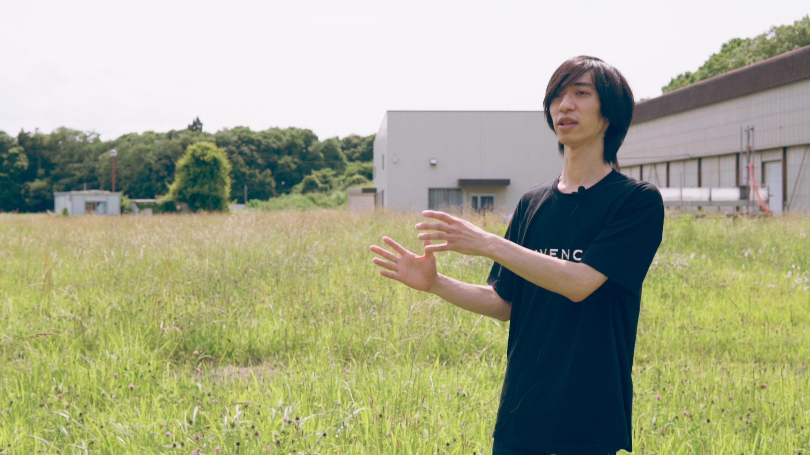
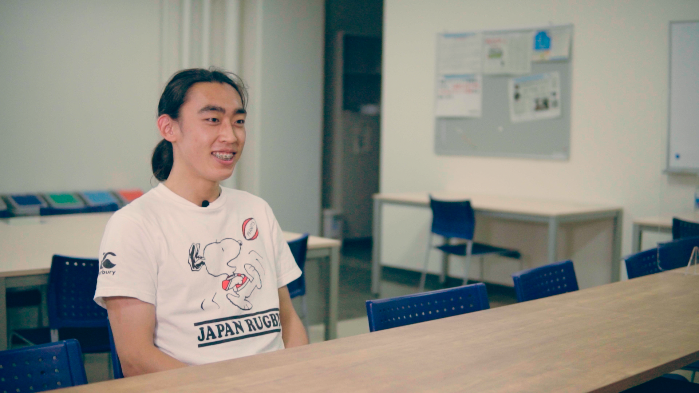
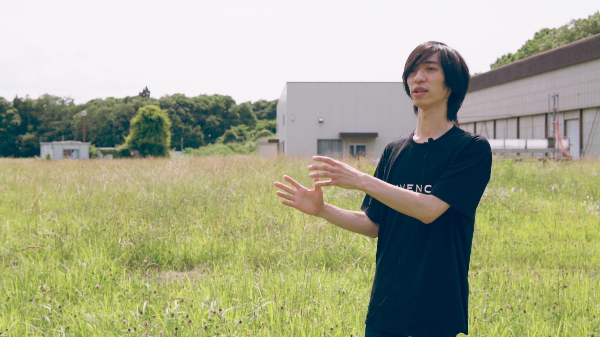
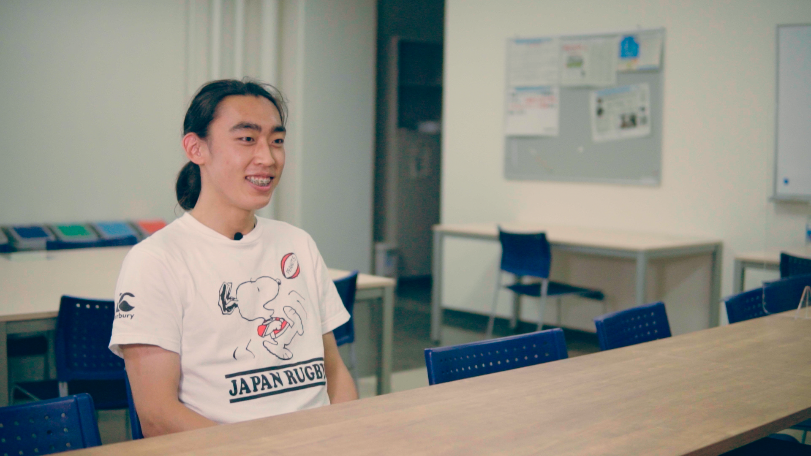

GFEST ガイドムービー
2020.10 / Guide Movie / Cinematographer
 

筑波大学の高校生向け社会連携事業「筑波大学 GFEST」による企画事業。
はじめて研究・探究活動に取り組む中高生向けの動画教材の撮影を担当した。
Credit
- Planning, Direction : Kazumi Inada
- Cinematographer : Tomoya Onuki
- Music : Takuto Okamoto
- Client : GFEST by University of Tsukuba